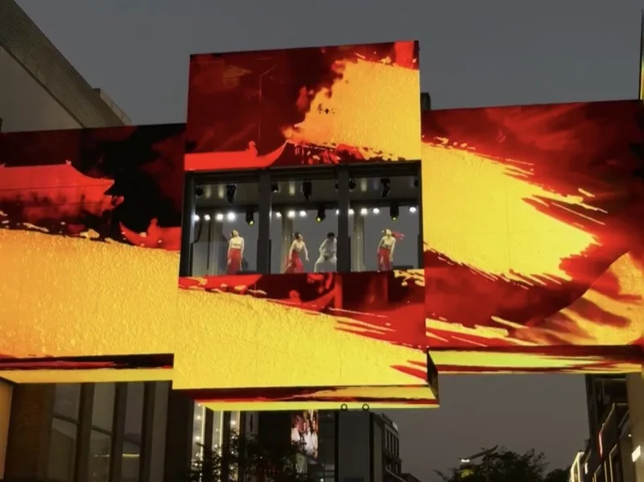
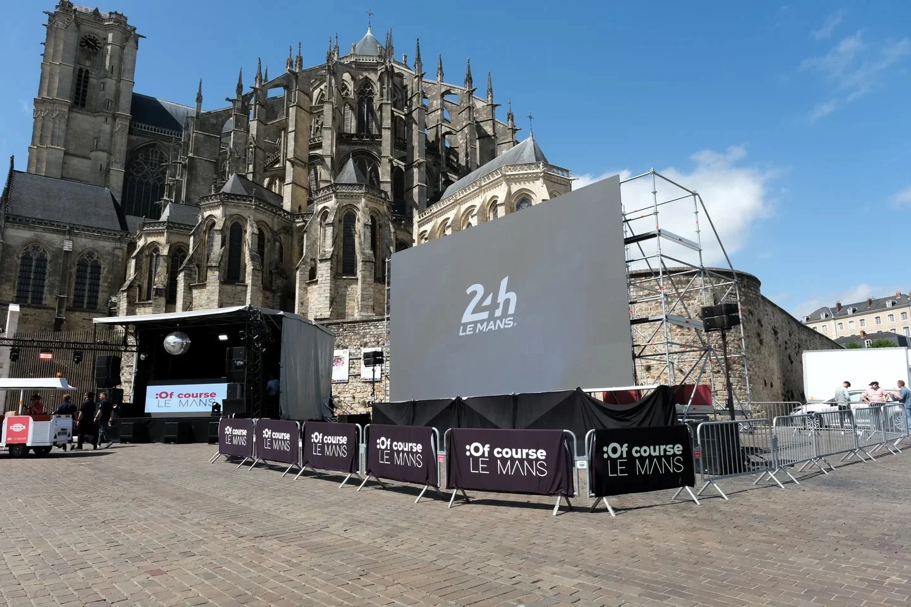

What is C5 and salt-spray protection on a coastal outdoor LED wall? It is the corrosion and weather-protection package that keeps cabinets, fasteners, coatings and electronics serviceable in air that carries salt, high humidity and, often, strong sun. An IP rating tells you how well the enclosure keeps water and dust out of the interior. It does not, by itself, tell you how the aluminium, the steel, the coatings and the fasteners will behave after two or three seasons at the shore. Coastal tenders that only write “IP65 outdoor LED” leave that second question unasked.
This guide is for buyers specifying fixed outdoor walls in coastal cities, ports, waterfront promenades and high-salinity industrial sites, including Gulf and other humid coastal markets. It is a procurement checklist, not a coating manual. For what an IP code does and does not cover, including its short coastal section, use our IP rating guide. Brightness and daylight contrast are covered in the outdoor high-brightness guide and the outdoor billboard buying guide.
Salt does not have to be a visible deposit on the face to do damage. Marine and near-marine atmospheres carry chloride that settles on cabinets, seams, fasteners and heat sinks. Combined with humidity and temperature cycling, that deposit accelerates corrosion of untreated or thinly coated metal, attacks cut edges and weld zones, and can work into connectors and earth points. A wall that is dry inside (a pass against ingress) can still lose coating, seize fasteners, or show white corrosion on unsealed aluminium within a warranty period if the corrosion class was never specified.
Distance from the sea matters, but so do wind direction, surf, a site above a salty lagoon, or a road that is salted in winter. A “a few hundred metres inland” clause is not a substitute for a stated corrosivity class. Ask the specifier or a corrosion engineer to classify the site, then write that class into the RFQ, rather than describing the postcode and hoping the factory interprets it the same way.
ISO 12944 is the widely used standard for protective paint systems on steel structures. It classifies atmospheric corrosivity from C1 (very low) to C5 (very high) and CX (extreme). In broad terms, C5 covers coastal and offshore areas with high salinity, or aggressive industrial atmospheres; CX covers more extreme offshore and splash-zone conditions. The standard also speaks about the durability range of a paint system, which is not the same thing as a product warranty.
Two points matter for an LED purchase. First, C5 is a site class, not a logo that a cabinet automatically carries. A bidder who writes “C5 LED cabinet” should be able to say which substrates, coatings, film thicknesses, fasteners and test evidence that claim covers. Second, an LED wall is not only a painted steel frame. It includes die-cast or fabricated aluminium cabinets, steel or aluminium sub-frames, stainless or coated fasteners, glands, connectors and, sometimes, a rear service corridor. A coating system that is documented for the steel frame does not automatically cover the cabinet alloy or the fasteners. Ask for the system to be described by part, not by a single class letter.
Asia Vision's published product pages do not state an ISO 12944 corrosivity class or a C5 rating for any series. Do not read a class into the pages. If a coastal project requires C5 or CX evidence, ask for the coating specification, the test reports and the covered parts on the quotation, and we will say what can be offered for that configuration.
ISO 9227 is the usual laboratory salt-spray (fog) test. It is a comparative and quality-control test, not a prediction of years of life at a named beach. A useful report, for a buyer, states:
A “1,000-hour salt spray” line in a brochure is not enough if you cannot see what was tested and what passed. Hours are not interchangeable across test variants, and a coupon test is not a cabinet test. If the tender needs a stated duration, name the standard, the variant, the hours and the specimen in the RFQ, and reject a figure that cannot be traced to a report.
Figure 1 shows an outdoor architectural LED volume. A waterfront or high-salinity site adds a corrosion specification to the same kind of exposed build; the image is an outdoor installation, not a coastal site in itself.

Ingress protection and corrosion protection answer different questions. IP65, when it is published and evidenced, is about dust and water jets on the enclosure as tested. Coastal air can still corrode the outside of a well-sealed cabinet, attack fasteners, and degrade coatings at cut edges. A coastal specification therefore needs both: an IP rating for the enclosure, and a corrosion class plus test evidence for the metals and coatings.
On Asia Vision's published product pages, the COB EH-PRO outdoor fine-pitch series states IP65, with 3500 cd/m², ≥10,000:1 contrast, ≥3840 Hz refresh, and a 500 × 500 × 90 mm die-cast aluminium cabinet at P1.5625 / P1.953. That IP65 figure is the published enclosure rating; it is not a C5 claim. The COB EF outdoor fixed series publishes flip-chip COB, 3000 cd/m², ≥10,000:1 contrast, and a 500 × 500 mm cabinet, but it does not publish an IP rating on the product page. D-PRO is the conventional-pitch outdoor fixed series (P5 to P10, front maintenance, brightness up to 10,000 cd/m²) and likewise does not publish an IP rating or a corrosivity class on its product page. For both EF and D-PRO, the IP rating, the coating system and any salt-spray evidence have to be confirmed on the quotation.
Front maintenance, which D-PRO and COB EF both emphasise, is useful on a waterfront facade where there is no safe rear access. It does not reduce the need to specify stainless or otherwise suitable fasteners and to plan a cleaning and inspection interval. Salt that is left on the face and the frame will do more damage than salt that is washed off on a stated schedule.
Write the following into the technical annex, and ask the bidder to answer line by line rather than with a single “marine grade” phrase:
A sealed COB face, as published for EH-PRO and EF, has no individual lamp to corrode or knock off, which helps on a reachable or wind-blown facade. It does not replace the coating and fastener specification behind the face. If the wall is a billboard or a landmark screen, say so in the enquiry; the mechanical package is different from a close-view concourse wall even when the site class is the same.
Figure 2 shows an unsheltered outdoor LED wall standing in an open square. Temporary and permanent coastal walls share the same exposure problem; only the structure and the service life differ.

Name the target markets in the same file if the wall is part of a regional estate — for example a Gulf coastal site, where import and certification questions are covered in our UAE and Saudi Arabia importer guides. Product pages publish a 3-year warranty and 18-day standard delivery. A special coating system, a new salt-spray test or a non-standard fastener pack is not assumed to sit inside that 18-day figure; ask for the lead time on the quotation.
For a close-view outdoor facade or concourse in a harsh climate, COB EH-PRO is the series that already publishes IP65 and 3500 cd/m². COB EF and D-PRO are the other outdoor fixed starting points, with IP and corrosion evidence to be confirmed per configuration. Send the site location, the distance and exposure to salt air if you know them, the required corrosivity class if an engineer has set one, the wall size and the service access. We will reply with the published ratings that apply and with what coating and test evidence can be offered; we will not assign a C5 class to a series that does not publish one. Start the enquiry through the contact form.
Specifying a waterfront or high-salinity outdoor wall? Send the site, the required corrosivity class if you have one, and the wall size, and we will reply with the published ratings and the coating evidence available for that configuration. Start a project enquiry.